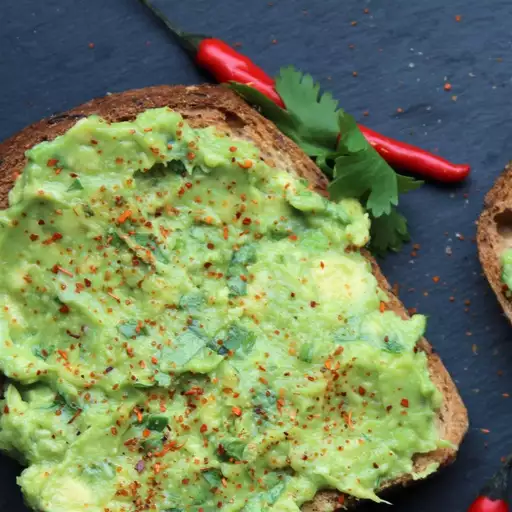

Avocado Toast

Vegan Avocado Toast
This is a delicious, healthy, hearty breakfast recipe.
Ingredients
- 4 slices whole-grain bread
- 1 avocado, halved and pitted
- 2 tablespoons chopped fresh parsley
- 1 1/2 teaspoons extra-virgin olive oil
- 1/2 lemon, juiced
- 1/2 teaspoon salt
- 1/2 teaspoon ground black pepper
- 1/2 teaspoon onion powder
- 1/2 teaspoon garlic powder
Directions
- Toast bread in a toaster or toaster oven.
- Scoop avocado into a bowl. Add parsley, olive oil, lemon juice, salt, pepper, onion powder,
and garlic powder;
mash together using a potato masher. Spread avocado mixture into each piece of toast.